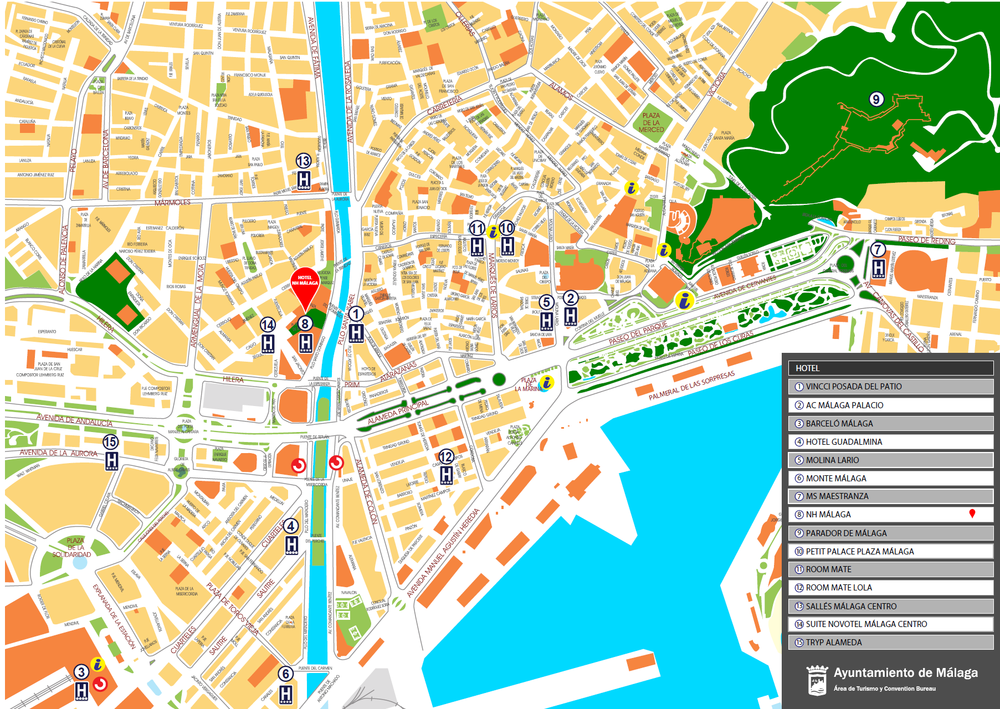

Accommodation
Málaga in October is a very nice place to go. You should book your accomodation well in advance in order to avoid any issues. Here you can find some suggestions, but there are many other good choices.
Hotel NH Malaga, Conference Venue
The Hotel NH Malaga is offering until August 1, 2015 or until everything is sold out, a set of rooms at a special rate for the persons attending the ISMIR 2015 conference. Should you want to make a reservation, contact directly the hotel:
By email: nhmalaga@nh-hotels.com
By phone: + 34 952 07 13 23
Remember to mention the following Booking reference: 1410449
Located in the historical and business centre of Malaga, the Hotel NH Malaga offers you the ideal meeting room required for holding your business meeting, convention, conference, or other social events such as banquets or parties. The meeting rooms, with different sizes and capacities from 7 to 1200 participants, are easily adaptable to cater to your needs.
Here you can find a map with the location of several hotels near the conference venue. You can download the image as a pdf file HERE
AC Málaga Palacio
-
Urban 4-star hotel with 214 rooms. Its unbeatable location between the Malaga cathedral and the Paseo del Parque, and its spectacular views of the port, make this hotel the most emblematic in the city. Ideal for business trips and to enjoy one of the best cultural and leisure offers of the Costa del Sol.
- Website
Barceló Málaga
-
The Hotel Barceló Malaga has direct access to the new high-speed railway station and is just 10 minutes from the historical city centre and the beaches along the seafront. Our 221 modern and comfortable bedrooms guarantee you a comfortable stay and the 1,500 m2 of rooms are an interesting option for business trips. gastronomy is another of our fundamental pillars. We offer the most complete breakfast buffet and our gastronomic “el andén” restaurant won the 2008 José Meliá finisterra award for the best hotel restaurant in Malaga.
- Website
Husa Guadalmedina
-
Husa Guadalmedina is located in the historic downtown of Malaga, beside the Centre of Contemporary Art. It has 60 totally equipped rooms. Its facilities include a cafeteria and private parking.
- Website
Molina Lario
-
Located in front of the Cathedral of Malaga, in the comercial and cultural center of the city, just a few metres away from the Port and the Picasso Museum. Newly built hotel, inaugurated in August 2006, consisting of three buildings, two of which have been completely refurbished, keeping the original 19th. Century façade, and the third absolutely new, together comprising a unique hotel set in the heart of the city.
- Website
Monte Málaga

-
Our superior category 4-star hotel in Malaga overlooks the sea and is a short distance from the beach, near the Picasso Museum and the AVE railway terminal. It has 179 rooms, most of them with sea views, including 7 Junior Suites and Suites with Jacuzzi, a SPA, pool and 8 fully equipped rooms for congresses, corporate events, wedding receptions and all kinds of celebrations. One of the first ecological hotels in Spain.
- Website
Room Mate Larios
-
Located on the emblematic Calle Marqués de Larios, in the historical and cultural heart of the city, along one of the city’s par excellence shopping avenues. The hotel is just steps away from the Picasso Museum, the Cathedral, the house where Picasso was born, the Alcazaba fortress and gibralfaro Castle, and of course some of the city’s typical bars and restaurants. Not to be forgotten are the many little stands along the edge of the beach, just minutes from Calle Larios.
- Website
Silken Puerta Málaga
-
The Hotel Puerta Malaga reflects the light and beauty of the Mediterranean that floods in from the Bay of Malaga, offering a welcoming and comfortable centre from which to explore the beautiful city of Malaga. Its modern architecture and immaculate decoration make it an ideal place to stay, whether your trip is for business or pleasure. The light-filled rooms, the fine restaurant and the magnificant public rooms combined with the expert and professional service in the Hotel Puerta Malaga will be sure to tempt you back to our city.
- Website
Petit Palace Plaza Málaga
-
The Petit Palace Plaza hotel is situated round the corner from calle Larios, one of the busiest shopping streets, a stone’s throw from the cathedral, in the middle of the historic centre of Malaga. The Petit Palace Plaza occupies a magnificient early twentieth-century building.
- Website
Hotel Suite Novotel
-
The first Suite Novotel in Málaga features 90 suites measuring 323 sq. ft. (30 m2). Boutique Gourmande, bar, fitness center, and paying private covered car park. The Suite Novotel in Malaga is located right in the heart of the historic city center, just 5 minutes from the entertainment district.
Hotel Ibis Budget
-
The Ibis budget Málaga Centro is one of the best choice low cost hotel in the center of Malaga. 125 newly designed, fully equipped romos. Just a five-minute walk from all Malaga's tourist attractions, including the Picasso museum, Calle Larios and the port.